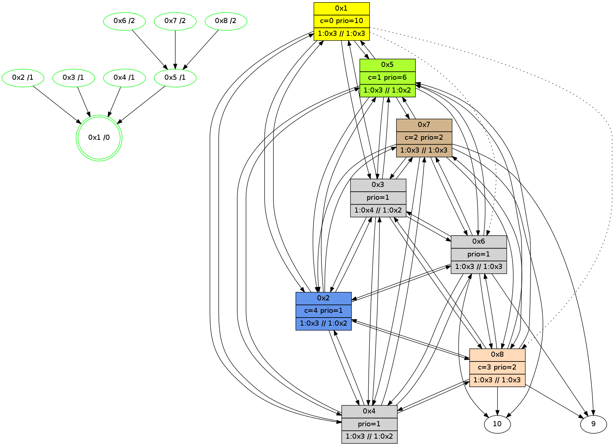

>> << IDX [start] -100 -25 -5 +0 +5 +25 +100 [410.004086971]
 Previous packets
----------------------------------------------------------------------
405.225131 beacon01(11f6) #0 coord=01,02,03,04,05,06,07,08,0a,09 cycle=688.0ms assoc
-- color-indic=1 64 76 b6
405.235284 beacon02(11f6) #0 coord=01,02,03,04,05,06,07,08,0a,09 cycle=688.0ms assoc 64 e5 87
405.245266 beacon03(11f6) #0 coord=01,02,03,04,05,06,07,08,0a,09 cycle=688.0ms assoc 64 9f ca
405.255267 beacon04(11f6) #0 coord=01,02,03,04,05,06,07,08,0a,09 cycle=688.0ms assoc 64 e8 20
405.265267 beacon05(11f6) #0 coord=01,02,03,04,05,06,07,08,0a,09 cycle=688.0ms assoc 64 92 6d
405.275267 beacon06(11f6) #0 coord=01,02,03,04,05,06,07,08,0a,09 cycle=688.0ms assoc 64 1c ba
405.285267 beacon07(11f6) #0 coord=01,02,03,04,05,06,07,08,0a,09 cycle=688.0ms assoc 64 66 f7
405.295272 beacon08(11f6) #0 coord=01,02,03,04,05,06,07,08,0a,09 cycle=688.0ms assoc 64 e3 66
405.343475 [Hello(2): seq=204 sym=1,7,5,3,8,4,6 sysInfo=hasWarning,coloring-mode-on,ColoringModeIndicationCalled stat=1:11,7,5,0/7:14,5,2,10/5:15,7,4,2/3:15,6,2,11/8:13,6,14,2/4:0,6,4,13/6:4,7,1,12]
405.377004 [Hello(6): seq=204 sym=10,7,5,3,8,4,2,9 sysInfo=hasWarning,coloring-mode-on,ColoringModeIndicationCalled stat=10:14,4,12,7/7:9,6,2,10/5:4,5,4,2/3:6,6,3,13/8:0,7,0,3/4:10,6,1,12/2:6,5,1,11/9:5,5,2,3]
405.381935 [STC(6)->5-.->1 #0.22 new-neigh,stable,to-color d=2]
405.390384 [Hello(8): seq=204 sym=2,7,5,6,3,4,10,9 sysInfo=coloring-mode-on,ColoringModeIndicationCalled stat=2:12,5,2,13/7:9,6,2,10/5:6,6,3,2/6:7,7,1,11/3:2,5,2,12/4:0,6,2,12/10:3,4,12,7/9:9,5,11,2]
405.395328 [STC(8)->5-.->1 #0.22 new-neigh,stable,to-color d=2]
405.425069 [Hello(7): seq=204 sym=10,5,6,8,3,2,4,9 sysInfo=coloring-mode-on,ColoringModeIndicationCalled stat=10:1,5,14,8/5:7,6,4,2/6:7,7,2,12/8:3,7,2,3/3:7,5,3,12/2:4,5,1,11/4:5,6,15,10/9:0,7,2,3]
405.429351 [STC(7)->5-.->1 #0.22 new-neigh,stable,to-color d=2]
405.438844 [Hello(4): seq=204 sym=1,2,5,6,3,8,7 sysInfo=coloring-mode-on,ColoringModeIndicationCalled stat=1:11,6,6,0/2:2,7,4,13/5:4,6,5,2/6:11,7,3,12/3:5,6,2,11/8:15,6,14,2/7:5,5,3,10]
405.464890 [Hello(3): seq=204 sym=1,2,7,5,6,8,4 sysInfo=hasWarning,coloring-mode-on,ColoringModeIndicationCalled stat=1:12,7,5,0/2:1,6,2,14/7:0,5,3,9/5:13,7,2,2/6:10,7,3,12/8:14,6,15,2/4:5,6,4,13]
405.469390 [Hello(5): seq=204 sym=1,2,7,6,3,8,4 sysInfo=hasWarning,coloring-mode-on,ColoringModeIndicationCalled stat=1:12,6,5,0/2:1,7,3,13/7:3,5,3,10/6:13,7,2,12/3:3,6,4,12/8:15,6,15,2/4:3,7,2,12]
----------------------------------------------------------------------
406.013268 beacon01(11f6) #0 coord=01,02,03,04,05,06,07,08,0a,09 cycle=688.0ms assoc
-- color-indic=1 64 ca b3
406.023434 beacon02(11f6) #0 coord=01,02,03,04,05,06,07,08,0a,09 cycle=688.0ms assoc 64 59 82
406.033403 beacon03(11f6) #0 coord=01,02,03,04,05,06,07,08,0a,09 cycle=688.0ms assoc 64 23 cf
406.043403 beacon04(11f6) #0 coord=01,02,03,04,05,06,07,08,0a,09 cycle=688.0ms assoc 64 54 25
406.053404 beacon05(11f6) #0 coord=01,02,03,04,05,06,07,08,0a,09 cycle=688.0ms assoc 64 2e 68
406.063404 beacon06(11f6) #0 coord=01,02,03,04,05,06,07,08,0a,09 cycle=688.0ms assoc 64 a0 bf
406.073405 beacon07(11f6) #0 coord=01,02,03,04,05,06,07,08,0a,09 cycle=688.0ms assoc 64 da f2
406.083408 beacon08(11f6) #0 coord=01,02,03,04,05,06,07,08,0a,09 cycle=688.0ms assoc 64 5f 63
406.125598 [Color(4) seq=7 @0:0 prio=1 >2.@8,1.@2,1.@3,1.@6 >>2.@8,1.@2,1.@3 c=0,1,2]
406.142048 [Hello(1): seq=205 sym=5,3,2,4 asym=8,6 sysInfo=hasWarning,coloring-mode-on,ColoringModeRequestCalled stat=5:1,6,5,2/3:6,6,4,13/2:1,6,3,14/4:5,8,4,14/8:2,6,15,2/6:0,7,2,12]
406.146158 [Color(1) seq=7 @0:0 color=0 prio=10 >1.@2,1.@3,1.@4 >>2.@8,1.@2,1.@3 c=1;2]
406.172480 [Color(3) seq=7 @0:0 prio=1 >2.@8,1.@2,1.@4,1.@6 >>2.@8,1.@2,1.@3 c=0,1,2]
406.187717 [Color(2) seq=7 @0:0 prio=1 >2.@8,1.@3,1.@4,1.@6 >>2.@8,1.@2,1.@3 c=0,1,2]
406.194433 [Color(7) seq=7 @0:0 color=2 prio=2 >2.@8,1.@2,1.@3,1.@4 >>2.@8,1.@2,1.@3 c=1;0]
406.202674 [Color(6) seq=7 @0:0 prio=1 >2.@8,1.@2,1.@3,1.@4 >>2.@8,1.@2,1.@3 c=1,2;0]
406.204943 [Color(8) seq=7 @0:0 color=3 prio=2 >1.@2,1.@3,1.@4,1.@6 >>2.@8,1.@2,1.@3 c=1,2;0]
406.207151 [Color(5) seq=7 @0:0 color=1 prio=6 >2.@8,1.@2,1.@3,1.@4 >>2.@8,1.@2,1.@3 c=0,2]
----------------------------------------------------------------------
406.801405 beacon01(11f6) #0 coord=01,02,03,04,05,06,07,08,0a,09 cycle=688.0ms assoc
-- color-indic=1 64 fe ab
406.811569 beacon02(11f6) #0 coord=01,02,03,04,05,06,07,08,0a,09 cycle=688.0ms assoc 64 6d 9a
406.821540 beacon03(11f6) #0 coord=01,02,03,04,05,06,07,08,0a,09 cycle=688.0ms assoc 64 17 d7
406.831540 beacon04(11f6) #0 coord=01,02,03,04,05,06,07,08,0a,09 cycle=688.0ms assoc 64 60 3d
406.841540 beacon05(11f6) #0 coord=01,02,03,04,05,06,07,08,0a,09 cycle=688.0ms assoc 64 1a 70
406.851540 beacon06(11f6) #0 coord=01,02,03,04,05,06,07,08,0a,09 cycle=688.0ms assoc 64 94 a7
406.861541 beacon07(11f6) #0 coord=01,02,03,04,05,06,07,08,0a,09 cycle=688.0ms assoc 64 ee ea
406.871545 beacon08(11f6) #0 coord=01,02,03,04,05,06,07,08,0a,09 cycle=688.0ms assoc 64 6b 7b
406.909502 [Hello(5): seq=205 sym=1,2,7,6,3,8,4 sysInfo=hasWarning,coloring-mode-on,ColoringModeIndicationCalled stat=1:13,7,5,0/2:1,8,3,13/7:3,6,3,10/6:13,8,2,12/3:4,7,4,12/8:15,6,15,2/4:3,8,2,12]
406.930815 [Hello(7): seq=205 sym=10,5,6,8,3,2,4,9 sysInfo=coloring-mode-on,ColoringModeIndicationCalled stat=10:1,5,15,8/5:9,7,4,2/6:7,8,2,12/8:3,8,2,3/3:7,6,3,12/2:4,6,1,11/4:6,7,15,10/9:0,8,3,3]
406.945494 [Hello(4): seq=205 sym=1,2,5,6,3,8,7 sysInfo=coloring-mode-on,ColoringModeIndicationCalled stat=1:12,7,6,0/2:2,8,4,13/5:6,7,5,2/6:11,8,3,12/3:6,7,2,11/8:15,7,14,2/7:6,6,3,10]
406.982472 [Hello(6): seq=205 sym=10,7,5,3,8,4,2,9 sysInfo=hasWarning,coloring-mode-on,ColoringModeIndicationCalled stat=10:15,5,13,7/7:11,7,3,10/5:6,6,4,2/3:7,7,3,13/8:1,8,1,3/4:12,7,1,12/2:6,6,1,11/9:5,6,3,3]
406.993524 [Hello(8): seq=205 sym=2,7,5,6,3,4,10,9 sysInfo=coloring-mode-on,ColoringModeIndicationCalled stat=2:12,6,2,13/7:11,7,3,10/5:8,7,3,2/6:8,7,1,11/3:3,6,2,12/4:2,7,2,12/10:3,5,13,7/9:9,6,12,2]
407.019108 [Hello(2): seq=205 sym=1,7,5,3,8,4,6 sysInfo=hasWarning,coloring-mode-on,ColoringModeIndicationCalled stat=1:12,8,5,0/7:0,6,3,10/5:1,8,4,2/3:0,7,2,11/8:15,7,15,2/4:2,7,4,13/6:6,8,2,12]
407.050150 [Hello(3): seq=205 sym=1,2,7,5,6,8,4 sysInfo=hasWarning,coloring-mode-on,ColoringModeIndicationCalled stat=1:13,8,5,0/2:2,7,2,14/7:1,6,3,9/5:15,8,2,2/6:11,8,3,12/8:15,7,15,2/4:6,7,4,13]
----------------------------------------------------------------------
407.589541 beacon01(11f6) #0 coord=01,02,03,04,05,06,07,08,0a,09 cycle=688.0ms assoc
-- color-indic=1 64 42 ae
407.599694 beacon02(11f6) #0 coord=01,02,03,04,05,06,07,08,0a,09 cycle=688.0ms assoc 64 d1 9f
407.609677 beacon03(11f6) #0 coord=01,02,03,04,05,06,07,08,0a,09 cycle=688.0ms assoc 64 ab d2
407.619675 beacon04(11f6) #0 coord=01,02,03,04,05,06,07,08,0a,09 cycle=688.0ms assoc 64 dc 38
407.629677 beacon05(11f6) #0 coord=01,02,03,04,05,06,07,08,0a,09 cycle=688.0ms assoc 64 a6 75
407.639677 beacon06(11f6) #0 coord=01,02,03,04,05,06,07,08,0a,09 cycle=688.0ms assoc 64 28 a2
407.649677 beacon07(11f6) #0 coord=01,02,03,04,05,06,07,08,0a,09 cycle=688.0ms assoc 64 52 ef
407.659680 beacon08(11f6) #0 coord=01,02,03,04,05,06,07,08,0a,09 cycle=688.0ms assoc 64 d7 7e
407.704860 [Color(8) seq=8 @0:0 color=3 prio=2 >1.@2,1.@3,1.@4,1.@6 >>2.@8,1.@2,1.@3 c=1,2;0]
407.709465 [Color(6) seq=8 @0:0 prio=1 >1.@2,1.@3,1.@4,1.@9 >>1.@2,1.@3,1.@4 c=1,2,3;0]
407.758727 [Hello(1): seq=206 sym=5,3,2,4 asym=8,6 sysInfo=hasWarning,coloring-mode-on,ColoringModeRequestCalled stat=5:2,7,5,2/3:7,7,4,13/2:2,7,3,14/4:6,8,4,14/8:3,8,15,2/6:1,9,2,12]
407.763138 [STC(1) #0.23 new-neigh,stable,to-color d=0]
407.764764 [Color(1) seq=8 @0:0 color=0 prio=10 >1.@2,1.@3,1.@4 >>2.@8,1.@2,1.@3 c=1;2]
407.787920 [STC(3)->1 #0.23 new-neigh,stable,to-color d=1]
407.791147 [Color(3) seq=8 @0:0 prio=1 >1.@2,1.@4,1.@6 >>1.@2,1.@3,1.@4 c=0,1,2,3]
407.793887 [STC(4)->1 #0.23 new-neigh,stable,to-color d=1]
407.796510 [Color(4) seq=8 @0:0 prio=1 >1.@2,1.@3,1.@6 >>1.@2,1.@3,1.@4 c=0,1,2,3]
407.798919 [STC(2)->1 #0.23 new-neigh,stable,to-color d=1]
407.801859 [Color(2) seq=8 @0:0 color=4 prio=1 >1.@3,1.@4,1.@6 >>1.@2,1.@3,1.@4 c=0,1,2,3]
407.831135 [STC(5)->1 #0.23 new-neigh,stable,to-color d=1]
407.834392 [Color(5) seq=8 @0:0 color=1 prio=6 >1.@3,1.@4,1.@6 >>1.@2,1.@3,1.@4 c=0,2,3,4]
----------------------------------------------------------------------
408.377678 beacon01(11f6) #0 coord=01,02,03,04,05,06,07,08,0a,09 cycle=688.0ms assoc
-- color-indic=1 64 86 a0
408.387858 beacon02(11f6) #0 coord=01,02,03,04,05,06,07,08,0a,09 cycle=688.0ms assoc 64 15 91
408.397813 beacon03(11f6) #0 coord=01,02,03,04,05,06,07,08,0a,09 cycle=688.0ms assoc 64 6f dc
408.407813 beacon04(11f6) #0 coord=01,02,03,04,05,06,07,08,0a,09 cycle=688.0ms assoc 64 18 36
408.417814 beacon05(11f6) #0 coord=01,02,03,04,05,06,07,08,0a,09 cycle=688.0ms assoc 64 62 7b
408.427814 beacon06(11f6) #0 coord=01,02,03,04,05,06,07,08,0a,09 cycle=688.0ms assoc 64 ec ac
408.437814 beacon07(11f6) #0 coord=01,02,03,04,05,06,07,08,0a,09 cycle=688.0ms assoc 64 96 e1
408.447818 beacon08(11f6) #0 coord=01,02,03,04,05,06,07,08,0a,09 cycle=688.0ms assoc 64 13 70
408.490617 [Hello(8): seq=206 sym=2,7,5,6,3,4,10,9 sysInfo=coloring-mode-on,ColoringModeIndicationCalled stat=2:13,7,3,13/7:11,7,3,10/5:8,8,4,2/6:8,8,1,11/3:4,7,3,12/4:2,8,2,12/10:4,6,13,7/9:10,7,12,2]
408.493619 [STC(8)->5-.->1 #0.23 new-neigh,stable,to-color d=2]
408.502318 [Hello(7): seq=206 sym=10,5,6,8,3,2,4,9 sysInfo=coloring-mode-on,ColoringModeIndicationCalled stat=10:2,6,15,8/5:9,8,5,2/6:8,9,2,12/8:5,9,3,3/3:8,7,4,12/2:5,7,2,11/4:6,8,15,10/9:1,9,3,3]
408.505335 [STC(7)->5-.->1 #0.23 new-neigh,stable,to-color d=2]
408.573750 [Hello(5): seq=206 sym=1,2,7,6,3,8,4 sysInfo=hasWarning,coloring-mode-on,ColoringModeIndicationCalled stat=1:14,8,6,0/2:2,9,4,13/7:5,6,4,10/6:14,9,2,12/3:5,8,5,12/8:1,7,0,2/4:4,9,3,12]
408.580638 [Hello(6): seq=206 sym=10,7,5,3,8,4,2,9 sysInfo=hasWarning,coloring-mode-on,ColoringModeIndicationCalled stat=10:0,6,13,7/7:12,7,4,10/5:7,7,5,2/3:8,8,4,13/8:3,9,2,3/4:12,8,1,12/2:6,7,2,11/9:6,7,3,3]
408.584600 [STC(6)->5-.->1 #0.23 new-neigh,stable,to-color d=2]
408.600755 [Hello(4): seq=206 sym=1,2,5,6,3,8,7 sysInfo=coloring-mode-on,ColoringModeIndicationCalled stat=1:13,8,7,0/2:3,9,5,13/5:7,8,6,2/6:13,9,4,12/3:7,8,3,11/8:1,8,15,2/7:7,6,4,10]
408.617430 [Hello(3): seq=206 sym=1,2,7,5,6,8,4 sysInfo=hasWarning,coloring-mode-on,ColoringModeIndicationCalled stat=1:14,9,6,0/2:2,8,3,14/7:2,6,4,9/5:0,9,3,2/6:12,9,4,12/8:0,8,0,2/4:7,8,5,13]
408.620437 [Hello(2): seq=206 sym=1,7,5,3,8,4,6 sysInfo=hasWarning,coloring-mode-on,ColoringModeIndicationCalled stat=1:13,9,6,0/7:1,6,4,10/5:2,9,5,2/3:1,8,3,11/8:0,8,0,2/4:3,7,4,13/6:7,9,3,12]
----------------------------------------------------------------------
409.165814 beacon01(11f6) #0 coord=01,02,03,04,05,06,07,08,0a,09 cycle=688.0ms assoc
-- color-indic=1 64 3a a5
409.175984 beacon02(11f6) #0 coord=01,02,03,04,05,06,07,08,0a,09 cycle=688.0ms assoc 64 a9 94
409.185949 beacon03(11f6) #0 coord=01,02,03,04,05,06,07,08,0a,09 cycle=688.0ms assoc 64 d3 d9
409.195948 beacon04(11f6) #0 coord=01,02,03,04,05,06,07,08,0a,09 cycle=688.0ms assoc 64 a4 33
409.205950 beacon05(11f6) #0 coord=01,02,03,04,05,06,07,08,0a,09 cycle=688.0ms assoc 64 de 7e
409.215949 beacon06(11f6) #0 coord=01,02,03,04,05,06,07,08,0a,09 cycle=688.0ms assoc 64 50 a9
409.225950 beacon07(11f6) #0 coord=01,02,03,04,05,06,07,08,0a,09 cycle=688.0ms assoc 64 2a e4
409.235954 beacon08(11f6) #0 coord=01,02,03,04,05,06,07,08,0a,09 cycle=688.0ms assoc 64 af 75
409.278470 [Color(5) seq=9 @0:0 color=1 prio=6 >1.@3,1.@4,1.@6 >>1.@2,1.@3,1.@4 c=0,2,3,4]
409.307556 [Hello(1): seq=207 sym=5,3,2,4 asym=8,6 sysInfo=hasWarning,coloring-mode-on,ColoringModeRequestCalled stat=5:3,9,6,2/3:8,8,5,13/2:3,8,4,14/4:7,9,5,14/8:4,8,0,2/6:2,9,3,12]
409.310367 [Color(1) seq=9 @0:0 color=0 prio=10 >1.@3,1.@4 >>1.@3,1.@4,1.@6 c=1,4;2,3]
409.335543 [Color(4) seq=9 @0:0 prio=1 >1.@3,1.@6 >>1.@2,1.@3,1.@4 c=0,1,2,3,4]
409.399203 [Color(3) seq=9 @0:0 prio=1 >1.@4,1.@6 >>1.@2,1.@3,1.@4 c=0,1,2,3,4]
409.407980 [Color(7) seq=9 @0:0 color=2 prio=2 >1.@3,1.@4,1.@6,1.@9 >>1.@3,1.@4,1.@6 c=1,3,4;0]
409.414677 [Color(8) seq=9 @0:0 color=3 prio=2 >1.@3,1.@4,1.@6,1.@9 >>1.@3,1.@4,1.@6 c=1,2,4;0]
409.418520 [Color(6) seq=9 @0:0 prio=1 >1.@3,1.@4,1.@9,1.@a >>1.@3,1.@4,1.@6 c=1,2,3,4;0]
----------------------------------------------------------------------
409.953950 beacon01(11f6) #0 coord=01,02,03,04,05,06,07,08,0a,09 cycle=688.0ms assoc
-- color-indic=1 64 2e cb
409.964105 beacon02(11f6) #0 coord=01,02,03,04,05,06,07,08,0a,09 cycle=688.0ms assoc 64 bd fa
409.974086 beacon03(11f6) #0 coord=01,02,03,04,05,06,07,08,0a,09 cycle=688.0ms assoc 64 c7 b7
409.984085 beacon04(11f6) #0 coord=01,02,03,04,05,06,07,08,0a,09 cycle=688.0ms assoc 64 b0 5d
409.994086 beacon05(11f6) #0 coord=01,02,03,04,05,06,07,08,0a,09 cycle=688.0ms assoc 64 ca 10